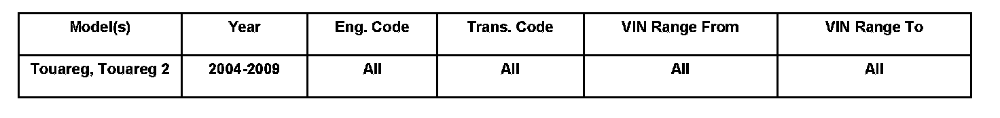
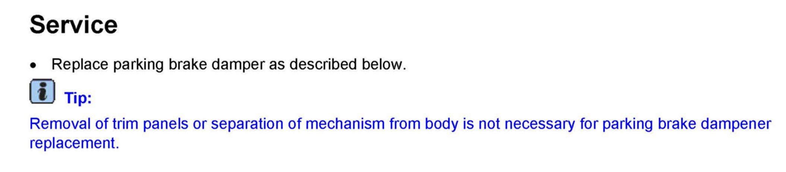
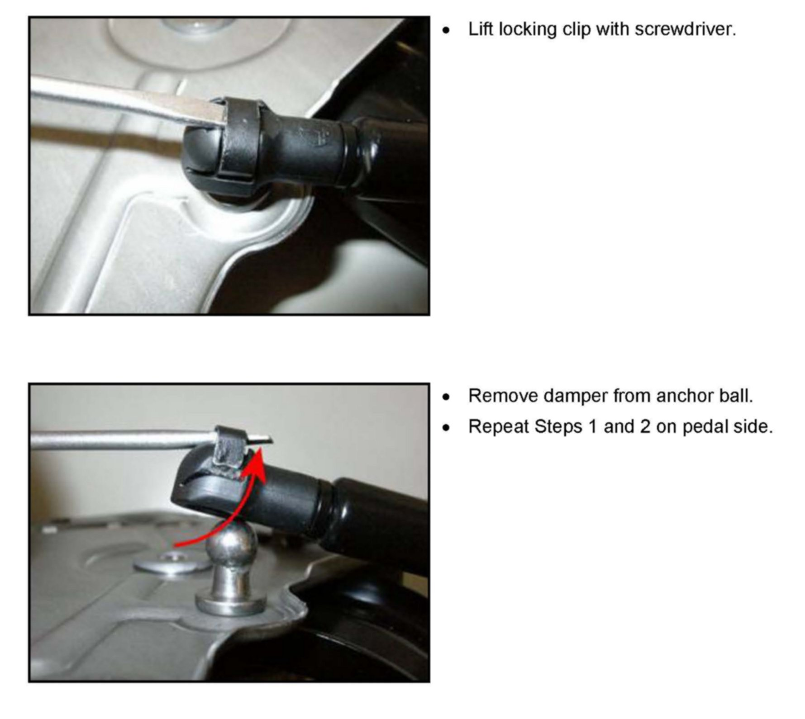
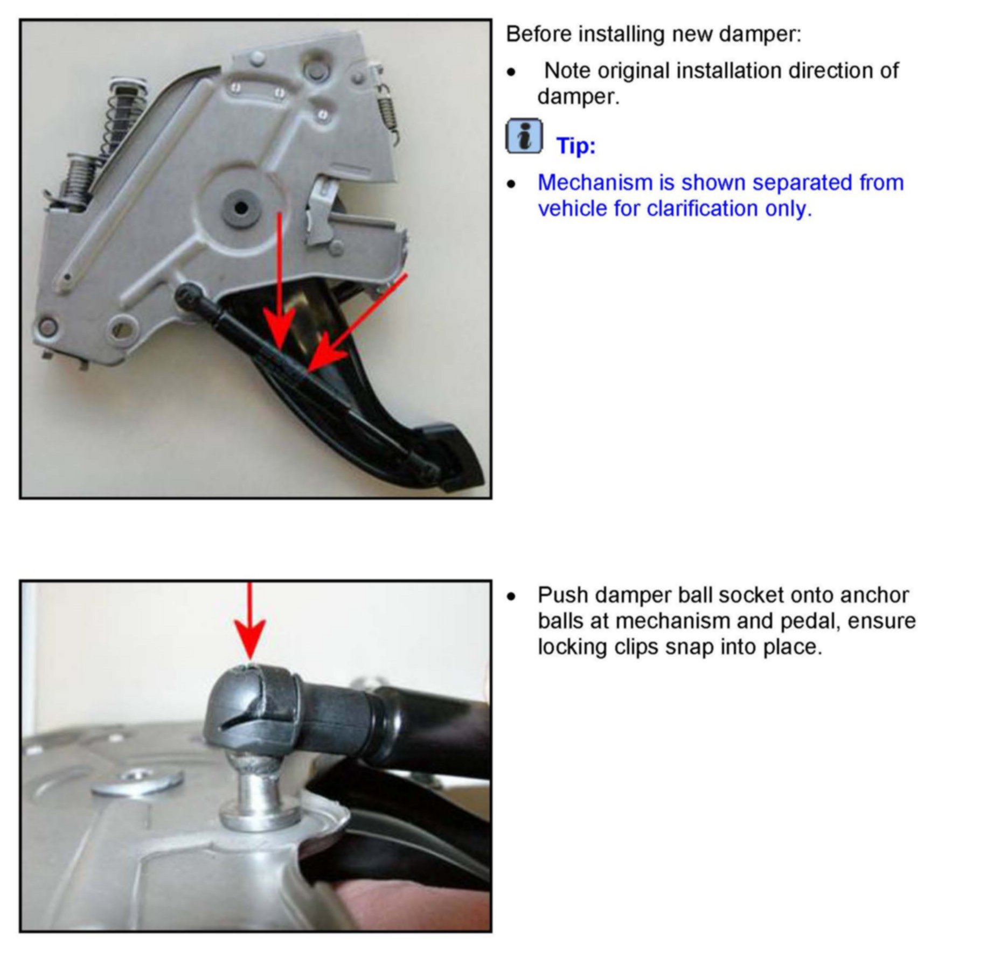
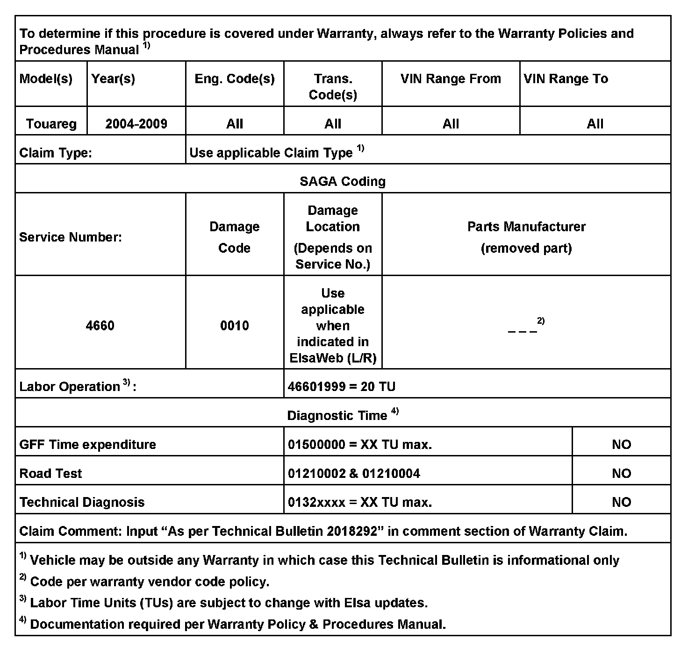

Brakes - Park Brake Indicator ON With Park Brake OFF
46 08 03Jul. 23, 2008
2018292 Supersedes T.B. Group 46 number 08-02 due to removal of 2009 VIN
restriction.

Vehicle Information
Condition
Parking Brake Indicator Remains Illuminated
Parking brake is completely released but parking brake indicator is still illuminated.
Technical Background
Parking brake damper can become weak over time. When releasing parking brake, the pedal may not return to the end stop position and parking brake indicator remains illuminated.
Production Solution
Oil in the damper was reduced and pressure increased.



Service

Warranty
Required Parts and Tools
No Special Tools required.
Additional Information
All part and service references provided in this Technical Bulletin are subject to change and/or removal.
Always check with your Parts Dept. and Repair Manuals for the latest information.